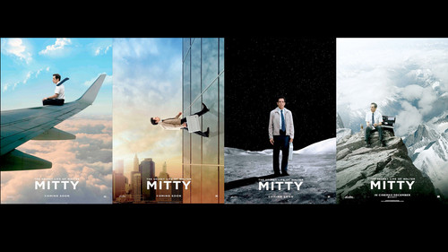

Решив опробовать новейшие технологии™, запустил (в который раз) Popcorn Time. Попкорнчик, в отличие от предыдущих попыток, заработал и показал список фильмов к просмотру.
Первой пропозицией шел мультик «Frozen», и рука уже потянулась к кнопке «Включить, сделать погромче и начать петь и танцевать». Но мозг, слава синапсам, понял, что Лена не выдержит дополнительные полтора часа мюзикла «Холодное сердце» в моем исполнении, потому что мультик этот я очень люблю и пою его уже месяца три (как-то так).
Поэтому разум и тело смело тыкнули во второе предложение: фильм «Секретная жизнь Уолтера Митти».
Ну это просто великолепно, скажу я вам. Сюжет прост, как пять копеек, но подача, но картинка, но музыка… Для путешественников, авантюристов и всех-всех-всех — просто обязательно к просмотру.
А у нас после титров появилось желание запустить фильм с начала во второй раз. И насладиться мелочами, которые пропустили при первом просмотре.
